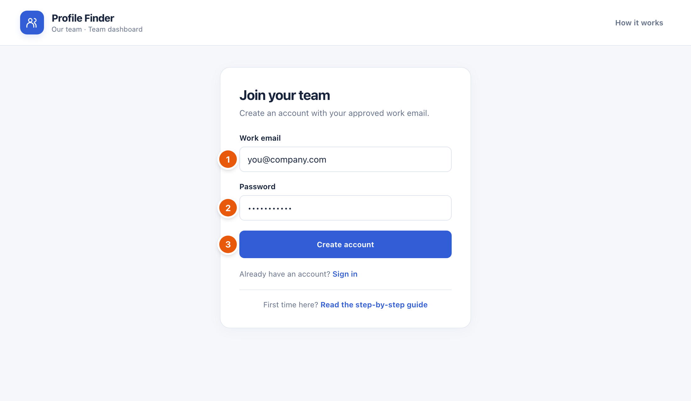
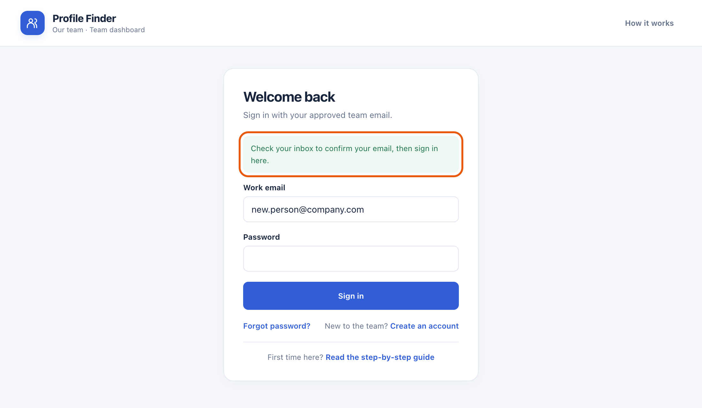
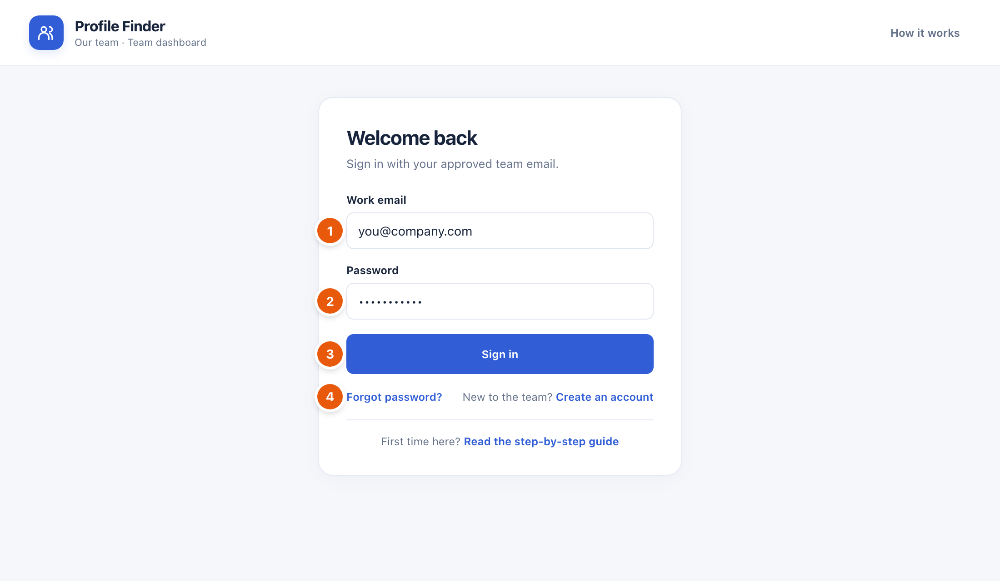
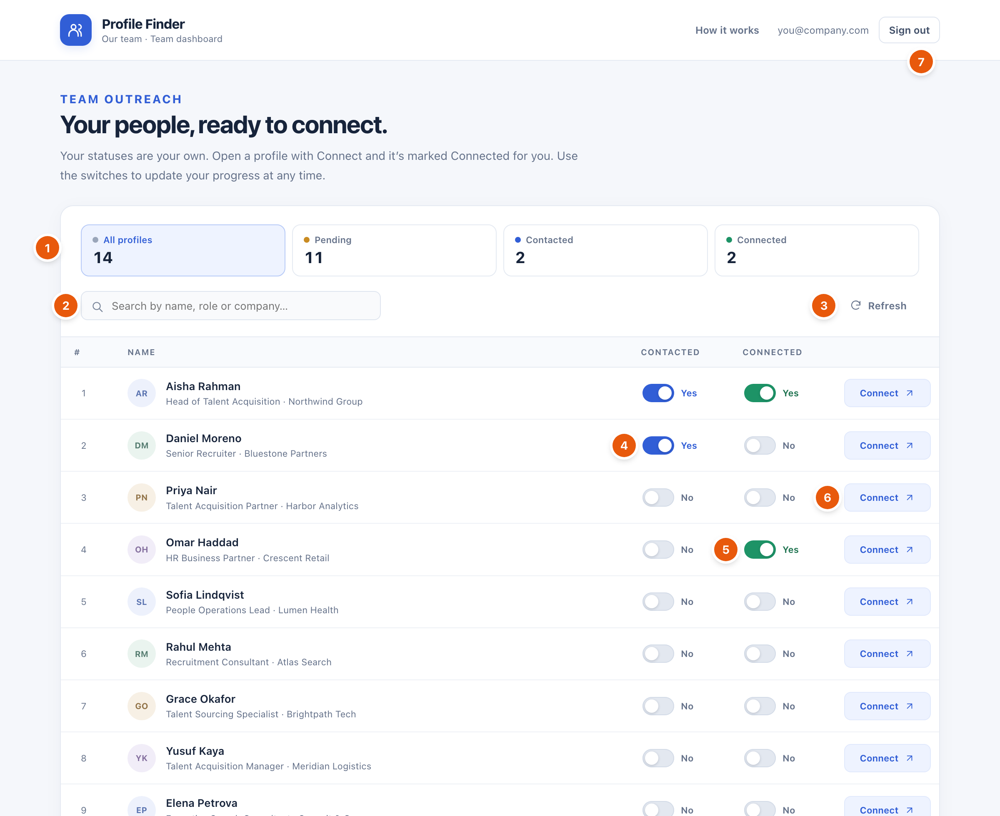
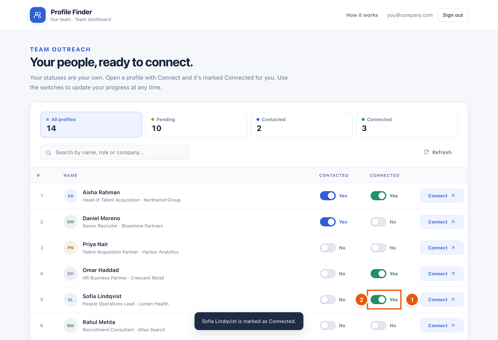
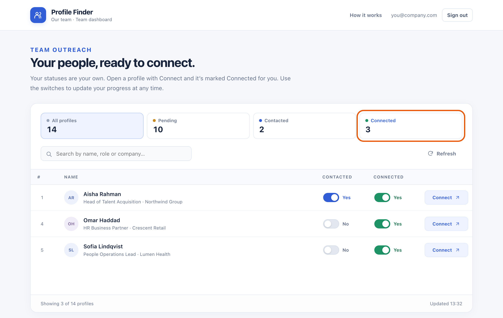
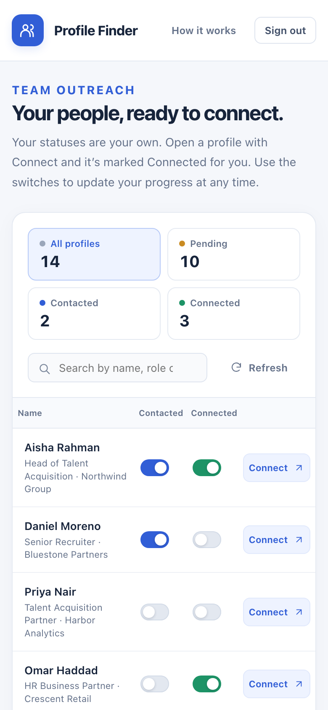
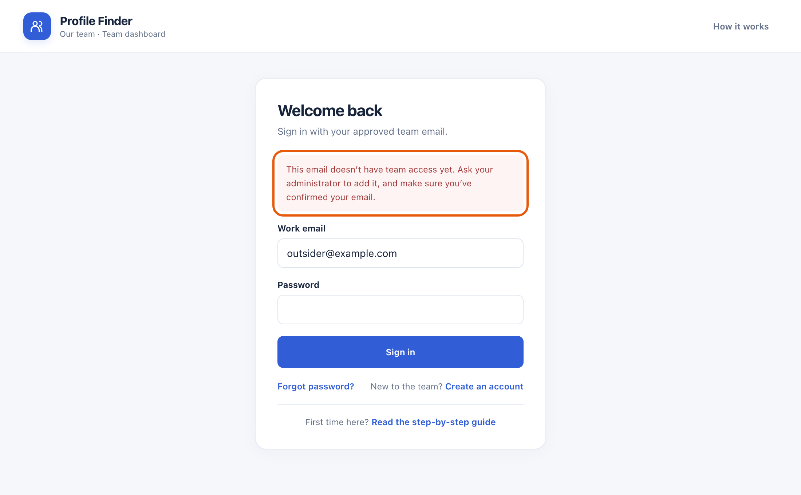

User guide
How to use Profile Finder
Profile Finder gives you a ready-made list of people to connect with on LinkedIn. You open each profile, send your invitation, and keep track of your progress, all in one place.
Quick start in 4 steps
- Get approvedAsk your administrator to add your work email to the team.
- Create your accountChoose Create an account and pick a password.
- Confirm and sign inClick the link in the confirmation email, then sign in.
- Start connectingClick Connect on a profile and send your invitation on LinkedIn.
What you can do
- See the full listEvery profile your team has collected, with name, job title and company.
- Connect in one clickThe Connect button opens the person’s LinkedIn profile in a new tab.
- Automatic trackingClicking Connect marks that person as Connected for you.
- Contacted switchTurn it on when you have messaged someone, so you remember.
- Connected switchShows who you have connected with. Turn it off if you didn’t connect.
- Your progress is privateYour switches are only yours. Teammates don’t see them, and you don’t see theirs.
- Filter and searchSee only Pending, Contacted or Connected people, or search by name, role or company.
- Works on your phoneOpen the same address on your phone and sign in.
Create your account
Before you start, your administrator must add your work email to the team. If they created your account for you, skip to Sign in.
- Open the dashboard and click Create an account (under the Sign in button).
- Enter your work email 1 and choose a password with at least 8 characters 2.
- Click Create account 3.

- You will see a green message: “Check your inbox to confirm your email.”
- Open the email and click the confirmation link once. It brings you back to the dashboard, signed in.

Tip: Can’t find the email? Check your spam or junk folder. The link works only once and expires after about an hour. If it has expired, see Problems and answers.
Sign in
- Enter your work email 1 and password 2.
- Click Sign in 3.
- Forgot your password? Click Forgot password? 4 and we’ll email you a link to choose a new one.

You stay signed in on this device until you click Sign out.
Using the dashboard
After you sign in, you see the list of profiles. Here is what each part does:

- Counters and filters. How many people are in each group. Click a box to show only those people.
- Search. Type a name, job title or company to find someone quickly.
- Refresh. Loads the newest profiles. The list also refreshes by itself every 30 seconds.
- Contacted switch. Turn it on when you have sent a message to this person. Blue means on.
- Connected switch. On (green) means you have connected. It turns on by itself when you click Connect.
- Connect. Opens the person’s LinkedIn profile in a new tab, so you can send your invitation.
- Sign out. Use this on shared or public computers.
How to connect with someone
- Find a person whose switches are both off (they are Pending).
- Click Connect 1. LinkedIn opens in a new tab.
- On LinkedIn, click Connect and send your invitation.
- Back on the dashboard, the Connected switch 2 is already on, and a message confirms it.

Opened a profile but didn’t send an invitation? Click the Connected switch to turn it off again.
See only one group
Click Pending, Contacted or Connected at the top to see just those people. Click All profiles to see everyone again.

On your phone

Open the same web address in your phone’s browser and sign in with the same email and password. Everything works the same way, and your progress is the same on every device.
Statuses explained
| Status | What it means | How it changes |
|---|---|---|
| Pending | You haven’t contacted or connected with this person yet. | Every profile starts here. |
| Contacted | You have sent this person a message. | You turn the Contacted switch on or off yourself. |
| Connected | You have connected with this person on LinkedIn. | Turns on when you click Connect. You can also switch it by hand. |
Private to you: each person on the team has their own statuses. When you sign in for the first time, everything is Pending, even if your teammates have already connected with some people.
Problems and answers
“This email doesn’t have team access yet”
Your administrator hasn’t added your email to the team, or you haven’t confirmed your email yet. Ask your administrator to add the exact email you sign in with, and make sure you clicked the confirmation link.

The confirmation link says it is invalid or has expired
Each link works only once and for about an hour. Go back to the dashboard and click Create an account again with the same email to get a new link, then click it straight away. If it still fails, ask your administrator to create your account for you.
I didn’t get the confirmation email
Check your spam or junk folder, and wait a few minutes. If it still doesn’t arrive, ask your administrator to create your account for you.
I forgot my password
On the sign-in page, click Forgot password?, enter your email and click Send reset link. Open the email, click the link, and choose a new password.
Wrong email or password
Check for typing mistakes and make sure Caps Lock is off. If you still can’t sign in, use Forgot password?.
I clicked Connect by mistake
Click the green Connected switch for that person to turn it off. Nothing is sent on LinkedIn unless you send the invitation yourself.
Can my teammates see what I have done?
No. Your Contacted and Connected switches are visible only to you. Everyone sees the same list of people, but each person tracks their own progress.
New people are not showing up
Click Refresh. New profiles appear after your administrator adds them.
Still stuck? Contact your administrator and tell them the exact message you see.